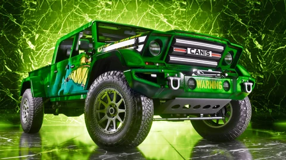

Official image
One-Eyed Willie’s Mod Shop 01
GTA VI Official image, published by Rockstar Games, credited and used unretouched.

The essentials
One-Eyed Willie’s Mod Shop 01 is a GTA VI official image, published by Rockstar Games (www.rockstargames.com). No description has been written for this image: its title is that of the official file. Credit: © Rockstar Games, Take-Two Interactive. Leonidakit uses it at 480 px and 1280 px, unretouched. On Leonidakit, it illustrates 90 pages: AfroBank FM: GTA VI’s African music radio station, Alligator in GTA VI, Ambrosia in GTA VI, GTA VI Armory: weapons, ammo and gear, Back Country Radio: GTA VI’s country radio station, Boobie Ike in GTA VI, Robbing a store in GTA VI, Brian Heder in GTA VI and 82 more.
Identity
Rights and use
This image belongs to Rockstar Games and Take-Two Interactive. Leonidakit, an independent fan site, shows it to document the game, with its credit and a link to the official page; it is neither sold nor modified. To reuse it, go through the official source.
Report an error on this pageWhat’s confirmed and how we check itIn the site’s credits